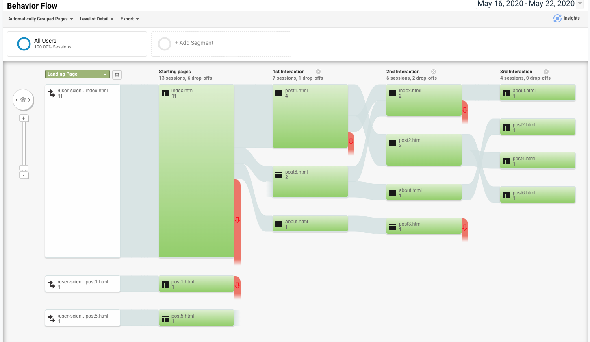

This week, I’m checking in on my own website - User Science Journal - to see if anyone is visiting it. This will likely become a series of blogs, testing the analytics of my website. In this blog, I discuss the installation of a metrics tracker, my predictions about my users, and what actually happened.
Getting Ready to Measure Traffic - Adding Google Analytics
To measure my web traffic, I added Google Analytics. I already had a Google account so I went straight to the Google marketing platform. I created a new account and got a tracking code. I took that tracking code and pasted it under the
tag on each of my website’s webpages. It was a very simple process that got it up and running. A few days later, however, I received an email from Google Analytics telling me that I still need to add the tag. But when I checked, I had done all of the things they had asked me to. I decided to ignore the email.I then reached out to a few colleagues on the evening of 5/20 to have them check the page out so that there would be some action in the analytics in time for this review.
Pre-evaluation - Who do I expect my users to be?
Considering I know who I sent my URL to, I expect that my analytics will look something like this:
Evaluation - What does my web traffic look like?
Audience
As shown in the graphic below, I had no visitors until I shared my URL with colleagues who in turn also shared it with friends. Beginning on 5/20, I have 12 users, all of them new. The average session duration was 1:16 minutes, and the bounce rate was 38.46%. This low bounce rate is likely because they were all exploring the page, rather than searching for something and coming to the page and deciding if they liked what they found. They were more forgiving!
Demographics
I went to get a closer look at my visitors by looking at the demographics report within the audience report. However, it showed me that I had no information there. At first I was concerned that I hadn’t properly set up the demographics feature, but after consultation, I learned that Google Analytics will not share demographic data when the number of users is below a certain threshold where their identity might be revealed. In the graphic below, the fields for age and gender remained empty.
Device
As predicted, my users are very evenly split between mobile and desktop users. (I sent my URL to some college age users and some older users, and expected the younger users to use their phones.) The bounce rate on desktop users was 50% and the bounce rate on mobile devices was 28.57%. This is good news since I know that more internet activity is happening on phones and that users are not finding the page to be challenging. The average session for desktop users was longer, however, signaling more of readiness to read/skim the blogs. I imagine the mobile users quickly scrolled through.
Acquisition
Not surprisingly, all of my visitors came to the site using the direct URL: I shared the link and they clicked on it.
They also mostly visited the site on one day- the same day I shared the URL. The remaining users may have just left the site open on their page.
Behavior
The 12 users visited 84 page views combined, 37 of them are unique page views. Most views - 57% - were to the home page. The next highest pages visited were blog post 1 and blog post 6, and then the About page.
Behavior Flow
Most users (11) start on the home page. They then commonly go to post 1. From there, some return to home (2), go to post 2 (2) or about (1) or post 3 (1). Four users continued to explore from there.
Conclusion
After sharing the URL for several days, I can say that I have some nice colleagues who were willing to explore it and share it with a few friends. They were curious about the page and checked out several blogs and learned more about me. There are a number of things I can do to publicize the page that I haven’t been doing yet, including sharing my blogs on social media with links back to the page. Google Analytics is a great window into how visitors use the page and it inspires me to want to learn a lot more about SEO.